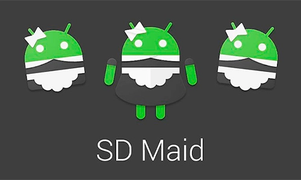
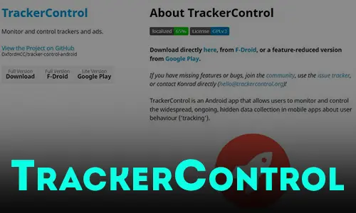
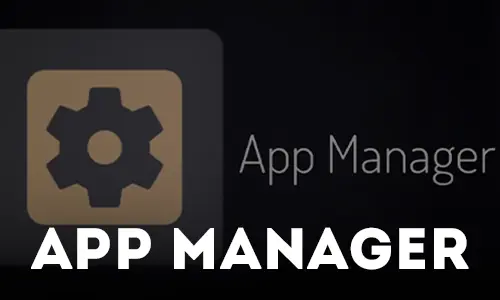
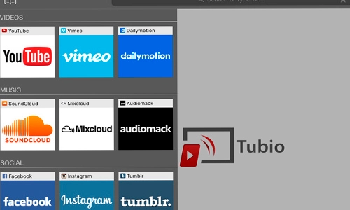
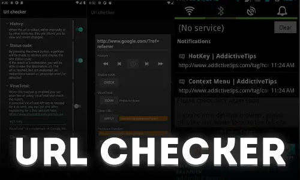
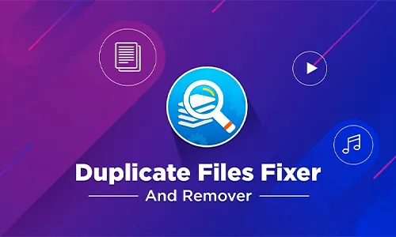
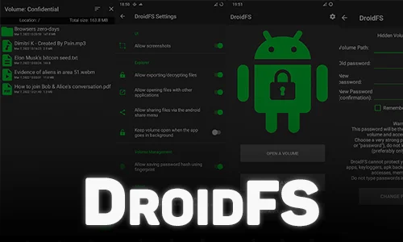

05.06.2022
Скачать!SD Maid поможет держать Ваше устройство в чистоте и порядке!Это приложение,предназначенное для очистки системы от накопленного мусора,которое поможет вам освободить место на вашем Android-устройстве.
05.06.2022
Скачать!YouTube Vanced - функциональный мод на YouTube для Android.Это неофициальная и модифицированная версия YouTube,дополненная такими функциями,как блокировка рекламы и трансляция в фоне.Приложение имеет многоязычный интерфейс.

08.07.2022
Скачать!TrackerControl позволяет пользователям отслеживать и контролировать повсеместный, постоянный, скрытый сбор данных в мобильных приложениях о поведении пользователей

08.07.2022
Скачать!App Manager - приложение для управления другими приложениями на устройствах с операционной системой Android. Оно предлагает различные функции, которые помогают пользователям эффективно управлять установленными приложениями
08.07.2022
Скачать!KISS Launcher - это простой, минималистичный и невероятно легковесный для Андроид. В отличие от традиционных лаунчеров, KISS Launcher не содержит множества скринов или виджетов, а сконцентрировано только на основных функциях.

05.06.2022
Скачать!Tubio - это приложение, которое позволяет транслировать видео из вашего Android на любой телевизор, подключённый к одной и той же WiFi-сети. Приложение совместимо со всеми моделями умных телевизоров.

09.07.2022
Скачать!Это небольшое приложение без рекламы служит промежуточным шагом к открытию URL-ссылок. Когда вы нажимаете на ссылку и выбираете это приложение, чтобы открыть его, отображается диалоговое окно с некоторой информацией о ссылке.
09.07.2022
Скачать!Универсальный набор инструментов прокси для Android, написанный на Kotlin. Основные функции: Прокси-серверы, Защита конфиденциальности, Улучшение безопасности
11.08.2022
Скачать!LibreAV - антивирус с открытым исходным кодом который способен обнаружить вредоносное ПО на устройствах Android с использованием подхода машинного обучения, основанного на TensorFlow.

05.06.2022
Скачать!Освободите место в вашем устройстве с помощью Duplicate Files Fixer и не храните на Android повторяющихся файлов благодаря простому сканированию. Один щелчок – всё что требуется для очистки вашего устройства от ненужных файлов.

05.06.2022
Скачать!Sms bomber Antichrist - это удобная программа для массовой рассылки SMS сообщений на разные номера. Достаточно мощный смс бомбер: Около 11 смс за 2-3 секунды

09.07.2022
Скачать!DroidFS — это альтернативный способ использования прозрачных криптографических файловых систем на Android, который использует собственный внутренний файловый менеджер вместо монтирования виртуальных томов.
05.06.2021
Скачать!VPN Master — очень простая, но эффективная программа для быстрой настройки и использования VPN для Windows.После её установки пользователю не придётся долго разбираться в интерфейсе ведь он интуитивно понятен.